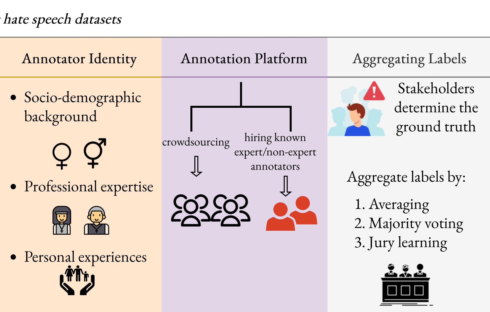
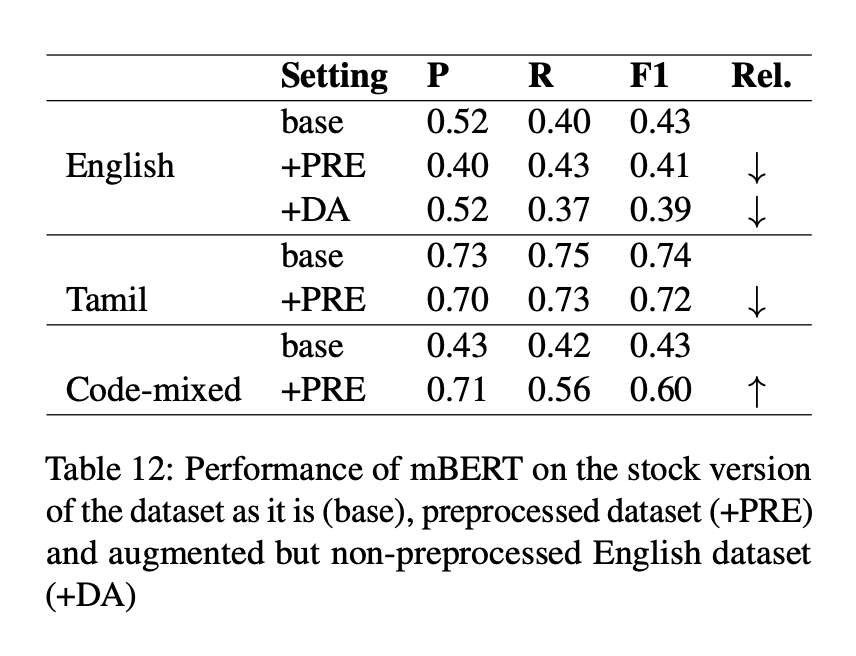
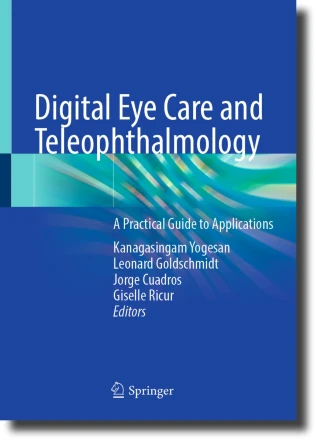

|
Vitthal Bhandari
I am a Master's student in Computational Linguistics at the University of Washington |

|
Research [ minimize ]I'm currently interested in AI Safety from a variety of perspectives - evaluation of language models for hidden objectives/biases; pluralistic alignment of language models; emergent misalignment. Here is some more information about me.
|
|  |
On the Challenges of Building Datasets for Hate Speech Detection
Vitthal Bhandari Preprint This paper presents a comprehensive framework that standardizes the dataset creation pipeline across seven critical checkpoints by identifying systemic challenges in hate speech dataset creation. arXiv |
|  |
Leveraging Pretrained Language Models for Detecting Homophobia and Transphobia in Social Media Comments
Vitthal Bhandari and Poonam Goyal ACL 2022 Workshop on Language Technology for Equality, Diversity and Inclusion I contributed to a shared task focused on identifying homophobic and transphobic content in YouTube comments by implementing basic classifiers using multilingual pre-trained language models to analyze English, Tamil, and code-mixed datasets. Paper | Code |
|  |
Reviewing the collaborative role of Image processing in retinal imaging
Rehana Khan, Vitthal Bhandari, Sundaresan Raman, Abhishek Vyas, Akshay Raman, Maitreyee Roy and Rajiv Raman Teleophthalmology and Digital Health: A Practical Guide to Applications, Springer Nature Paper |
Coursework |
|
LING 570: Shallow Processing Techniques for Natural Language Processing
LING 575: Societal Impacts of Language Technology Stanford CS 336: Language Modeling from Scratch Harvard CS 2881: AI Safety Stanford CS 234: Reinforcement Learning |
|
Credits of this template go to source code. |